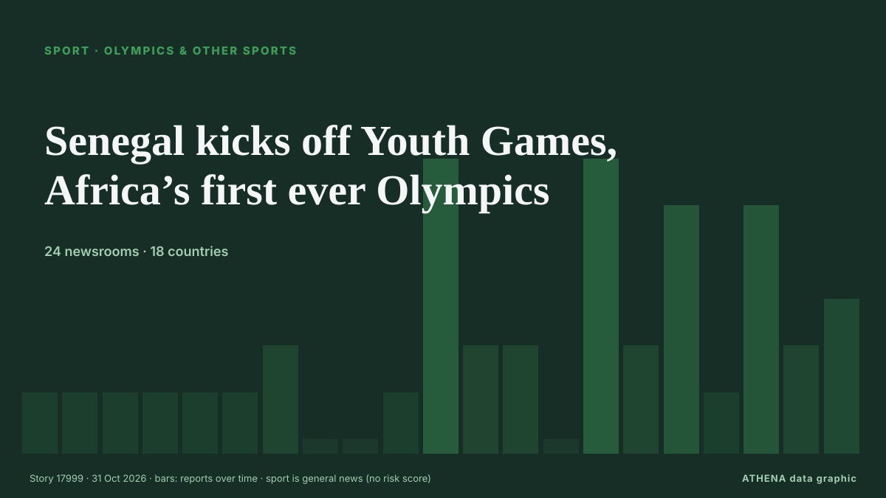

الألعاب الأولمبية ورياضات أخرى
| 18 أكتوبر | 1 |
|---|---|
| 19 أكتوبر | 0 |
| 20 أكتوبر | 0 |
| 21 أكتوبر | 2 |
| 22 أكتوبر | 2 |
| 23 أكتوبر | 0 |
| 24 أكتوبر | 2 |
| 25 أكتوبر | 2 |
| 26 أكتوبر | 2 |
| 27 أكتوبر | 2 |
| 28 أكتوبر | 4 |
| 29 أكتوبر | 3 |
| 30 أكتوبر | 4 |
| 31 أكتوبر | 0 |
تُعرض العناوين بالإنجليزية كما نُشرت.

Senegal kicks off Youth Games, Africa’s first ever Olympics
Dakar is hosting around 2,665 young competitors aged 14 to 17 from around the world, who will compete in 25 sports and 153 medal events. من Free Malaysia Today
Chase sparks Bangladesh collapse as West Indies on top in Mirpur Test
West Indies' Royston Chase forces collapse as Bangladesh slump to 79-6, a lead of 106 runs, on day three of first Test. من Al Jazeera English
Russia back in ice hockey world championships after sport court ruling
Court of Arbitration for Sport overturned IIHF decisions that excluded Russia from events in the 2026-27 season. من Al Jazeera English
Lancashire exit came as shock, says Anderson
Dubai: England cricket legend James Anderson is expected to bring his playing career to an end after Lancashire decided against offering him a new contract for the 2027 season. من Gulf News
South Africa unveils Durban as bid city for 2036 or 2040 Olympics
South Africa named the coastal city of Durban as its preferred candidate to host either the 2036 or 2040 Olympic Games. من Free Malaysia Today
Rashid Khan becomes first bowler to take 200 T20I wickets
Rashid also has two five-wicket hauls in T20 internationals, with career-best figures of 5-3. من Amu TV
Kiss backs 'hungry' Beale to push for Wallabies game time
SYDNEY: Wallabies head coach Les Kiss backed Kurtley Beale on Friday to push for a place in the Australian team during the Nations Championship after the veteran star’s shock recall. من New Straits Times
India Vs New Zealand Live Score, 4th T20I: NZ beat IND by 87 runs in Auckland
New Zealand's total was the joint-highest against India in T20Is and their highest on home soil. من Times of India
Iran wins Greco-Roman wrestling World Championship title
Tehran, IRNA – Iran’s national Greco-Roman wrestling team won the early overall title at the World Championships in Kazakhstan, with three gold, two silver and two bronze medals. من IRNA (English)
Tyson Fury says he ‘didn’t want to live’ in tearful new documentary trailer
The upcoming self-titled Netflix documentary traces the boxer’s life from his childhood to the height of his career. من Evening Standard (London)
Jake Paul announces Dubai boxing comeback on Christmas Eve after Anthony Joshua defeat
Jake Paul will return to boxing in Dubai on December 24, 2026, one year after his Anthony Joshua fight. من Arabian Business
Australia fight back in decisive test v South Africa
Renshaw is in contention to open alongside Travis Head as Australia prepare for South Africa showdown. من Express Tribune
Trump: Judge would be held 'fully responsible' for anyone hurt on 'absolutely disgusting' East Potomac golf course
President Trump on Wednesday evening slammed U.S. من The Hill
From Abu Dhabi to London: Aldar’s growing British property footprint
The developer is behind homes across London, from the iconic Westminster Tower to the transformation of a historic county hall in Kingston upon Thames. من Arabian Business
Moscow to host 2030 World Weightlifting Championships
That was announced by the press service of the International Weightlifting Federation. من TASS (English)
Perfect pairing? Why India must stick with Abhishek Sharma and Vaibhav Sooryavanshi
While Abhishek’s century was the headline act, Sooryavanshi’s fearless approach set the tone. من Times of India
Shackled, shaved and in uniform: first inmates arrive at Costa Rica mega-prison
SAN JOSE, Oct 27 - Costa Rica has locked up the first 123 inmates in a new mega-prison, built with the help of the Salvadoran government in the outskirts of capital San José, the country's justice… من The Straits Times
Trial date set for group accused of vandalising Trump Turnberry golf course
Police were called to the five star Trump Turnberry course on Maidens Road, Turnberry, South Ayrshire on March 8 last year. من Evening Standard (London)